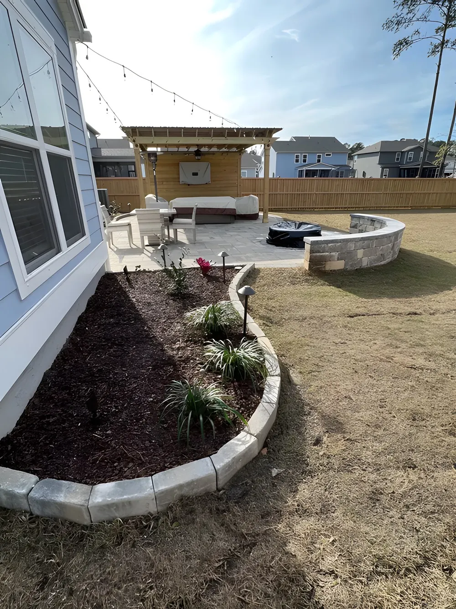

Backyard Design Ideas for Charleston Homes (Outdoor Living 2026 Guide)
A backyard in Charleston can be a lot of things: a pool area, an outdoor dining room, a landscaped escape, a covered entertaining space that gets used year-round. What it cannot be is an afterthought, because the Lowcountry climate creates real challenges for outdoor spaces that are not designed with intention.
Clay soil, coastal humidity, heavy summer storms, and the occasional tidal flood event all affect how a Charleston backyard performs. The ideas that look great on Pinterest do not always translate to a property in West Ashley, Mount Pleasant, or a downtown lot with six inches of clearance to the neighbor's fence. Good backyard design in Charleston means working with the specific conditions of the property, not against them.
At Cramers Landscaping, we have designed and installed custom backyards throughout Charleston and the Lowcountry. This guide covers the best design ideas for Charleston homeowners at a range of budgets, what to prioritize, what to avoid, and what makes a Lowcountry backyard different from everywhere else.
What Makes Backyard Design in Charleston Unique

Before getting into specific ideas, it is worth understanding the conditions that shape every outdoor project in this market.
Downtown Charleston
Downtown lots are small, often historic, and subject to flooding. Properties in areas like Harleston Village, Wagener Terrace, and South of Broad have strict rules around what structures can be built, how they must look, and how close they can come to property lines. Historic preservation guidelines may govern material selection and fence height. Drainage is nearly always a priority, and maximizing a small footprint requires more thoughtful design than a larger suburban lot allows.
For downtown properties, the best backyard design approach is to create one well-designed, purposeful outdoor space rather than trying to do too much. A beautiful patio with excellent landscaping and good lighting accomplishes more than a cluttered yard with too many features competing for space.
West Ashley, Mount Pleasant, and the Surrounding Communities
Properties outside the downtown core typically offer more square footage and fewer historic restrictions, but the coastal character of the design language still shapes what feels right. Homeowners in these areas tend to gravitate toward a relaxed, coastal aesthetic: natural materials, lush tropical plantings, covered structures that invite year-round use, and outdoor kitchens that make the backyard as functional as the interior.
Kiawah Island, Johns Island, and the Sea Islands
Properties on Kiawah Island and along the sea islands are often estate-scale with significant landscaping budgets. The expectation is a highly finished, resort-quality outdoor environment. Natural materials, mature plantings, custom water features, and seamless indoor-outdoor transitions are common in this market.
For Kiawah Island and Johns Island properties, we focus heavily on premium material selection and integration with the natural landscape, which often includes live oaks, palmetto palms, and coastal marsh views that should be enhanced by the design, not obstructed.
Backyard Design Ideas by Budget
Under $25,000: Prioritize What You Will Actually Use
For a budget in the $15,000 to $25,000 range, the smartest approach is to invest in one well-done element rather than spreading the budget thin across several mediocre ones.
Priority 1: A Paver Patio and Walkway
A well-built patio is the foundation of any backyard entertaining space. Done right, it gives you a clean surface for outdoor furniture, defines the outdoor room, and dramatically improves the usability of the backyard. A quality paver patio with a connecting walkway from the back door creates an immediate transformation in how the yard feels and functions.
Cramers installs patios in concrete pavers, brick, travertine, and bluestone. For most properties in this budget range, concrete pavers are the right choice: they are durable, available in a wide range of styles, and more cost-effective than natural stone while still looking polished.
Priority 2: Plants and Landscaping
After hardscape, plant material is what delivers the most visual impact for the dollar. Cosmetically, landscaping makes the biggest difference in how a yard looks and feels. Well-placed palmettos, ornamental grasses, flowering shrubs, and low-maintenance tropical plants can transform a bare or boring yard into something that feels lush and lived-in. Strategic planting also adds privacy screening, which is highly valued on properties with close neighbors.
At this budget level, we recommend anchoring the patio on at least two sides with planting beds, adding a defined front entry with fresh plant material, and refreshing any tired existing landscape with new mulch and edging.
$25,000 to $60,000: Add a Covered Structure
Once you have the patio and core landscape foundation, the next highest-return investment is a covered structure that makes the backyard usable in all weather.
Pergola
A custom wood or aluminum pergola over the patio adds shade and defines the outdoor room without the cost of a fully enclosed roof. Open-beam or louvered pergolas are popular because they allow you to adjust light and airflow. A 14x16 foot pergola can often be built for $15,000 to $25,000 depending on materials and complexity.
Pool Pavilion or Covered Patio
For homeowners who want real weather protection, a pavilion with a solid roof is the better long-term investment. The cost is higher, but the usability difference between a pergola with an open roof and a pavilion with a metal roof is significant when Charleston summer storms roll in. We build pool pavilions throughout the Lowcountry with standing seam metal roofs, tongue and groove ceilings, and Hardie-finished columns.
Outdoor Kitchen
If entertaining is a priority, adding a basic outdoor kitchen to an existing patio or alongside a new pergola can transform how the backyard is used. A starter outdoor kitchen with a grill, access doors, stone veneer counter, and granite countertop starts around $12,000 to $15,000.
$60,000 and Above: The Full Outdoor Living Build
At this budget level, you can build a complete outdoor environment: pavilion, kitchen, fireplace, pool deck, irrigation, landscape lighting, and mature plantings that make the space feel finished from day one.
For high-end projects in Charleston and the surrounding area, we design the full backyard as a unified space with each element intentionally planned to relate to the others. The patio flows into the pool deck. The pool deck connects to the pavilion. The pavilion anchors the kitchen and fireplace. The planting beds frame the hardscape. The lighting makes the entire space functional and beautiful after dark.
Backyard Design Ideas by Feature

Patios and Pavers
A well-designed patio is the single most important investment in a backyard renovation. It creates a functional surface, defines the primary outdoor living area, and sets the aesthetic tone for everything around it.
For Charleston homes, natural stone pavers such as travertine and bluestone are perennial favorites. Travertine is particularly suited to pool decks and patios because it stays cooler underfoot in the sun than concrete and has a warmth and texture that photographs exceptionally well. Brick is a classic choice for traditional Charleston-style homes and ties in naturally with the city's historic character.
Key design consideration: every patio we install in Charleston includes proper base preparation and drainage planning. Clay soil and heavy rainfall make drainage not optional. A patio that floods or shifts is a patio that will need to be rebuilt.
Outdoor Kitchens
An outdoor kitchen extends the functional living space of the home in a way that few other upgrades match. In Charleston's climate, where outdoor time is possible for most of the year, a well-built kitchen becomes one of the most-used features in the house.
The most popular outdoor kitchen configurations we install currently include a grill as the anchor appliance, a griddle for breakfast and lunch cooking, a built-in refrigerator, a sink with plumbing, and a Green Egg for smoking and slow cooking. Granite and quartzite countertops are the best performers in the Charleston climate, handling sun exposure, humidity, and heat without degrading.
We build kitchen frames from concrete block or powder-coated aluminum framing, both of which stand up to coastal humidity far better than wood-framed alternatives.
Pergolas and Pavilions
The difference between a pergola and a pavilion comes down to the roof. A pergola has an open or louvered top that provides partial shade and visual structure. A pavilion has a solid roof that provides full coverage.
For the Charleston climate, both have their place. Pergolas work well in locations with natural shade or for homeowners who want a lighter, more open structure. Pavilions are the right choice for properties where the primary use is entertaining and year-round weather protection is a priority. A metal-roofed pavilion sheds Charleston's summer storms immediately and keeps the space beneath it dry and comfortable regardless of the weather outside.
Fire Features
A fireplace or fire pit extends the outdoor season through the cooler months and creates a natural gathering point in the backyard. Charleston's winters are mild enough that an outdoor fireplace gets consistent use from October through March.
The style options range from a freestanding masonry fireplace with a full chimney to a clean-lined gas fire table integrated into the patio design. Built-in fireplaces are often incorporated into the structure of a pavilion, which creates a covered outdoor room that can be used year-round in any weather.
Landscape Lighting
Landscape lighting is one of the most underinvested components of a backyard, and one of the highest-impact ones. Good outdoor lighting transforms the yard after dark, makes the space usable into the evening, and dramatically improves the security and perceived safety of the property.
The most effective landscape lighting programs combine:
- Path lighting along walkways and patio edges
- Uplighting on key trees, palms, and architectural features
- Step lighting integrated into retaining walls and stairs
- Structure lighting under pavilion and pergola soffits
- String lighting or pendant lighting over the outdoor dining area
For coastal properties, all fixtures should be rated for salt air exposure. We use commercial-grade, corrosion-resistant fixtures throughout our landscape lighting installations.
Drainage and Grading
This is the least glamorous backyard improvement and the most important one for long-term performance. Charleston properties that do not drain properly develop standing water, erosion, saturated lawns, and hardscape that shifts and settles.
Before we design any backyard transformation, we evaluate the current drainage and grading. If issues exist, we recommend addressing them before investing in patios, plantings, or structures, because drainage problems do not disappear when you build over them. They come back worse.
Cramers' drainage and grading services include French drain installation, grading to redirect surface runoff, and catch basin installation for properties with concentrated water issues.
Design Trends We Are Seeing in Charleston in 2026
Outdoor rooms, not outdoor furniture arrangements. The shift in how clients think about their backyards has been significant. Homeowners are designing fully conceived outdoor rooms with defined walls (whether hedging, fencing, or planting beds), furniture at scale, overhead coverage, and a focal point. It looks like a room that happens to be outside, not a patio with chairs on it.
Natural materials with a coastal edge. Travertine, bluestone, brick, and cedar are dominant. The materials reference the region's character. Composite and synthetic alternatives are less popular in premium projects because they do not hold up as well in the coastal humidity and heat.
Multifunctional cooking zones. The single-grill outdoor kitchen has been replaced by a multifunctional cooking zone. Clients want a griddle, a Green Egg, a refrigerator, a sink, and adequate prep space. The outdoor kitchen is no longer an accessory to the backyard; it is a destination.
Low-maintenance landscaping. After years of high-maintenance traditional lawn care, more Charleston homeowners are choosing landscape designs that minimize turf and maximize perennial beds, ornamental grasses, and low-water plantings. Artificial turf is also increasingly requested for areas where natural grass struggles due to shade or drainage.
Serving Charleston and the Surrounding Area
We work on residential and commercial backyard projects throughout the greater Charleston area, including Isle of Palms, North Charleston, and the barrier islands. Every property and every backyard is different, and we design each project around the specific conditions and goals of the client.
Frequently Asked Questions
What is the best backyard investment for resale value in Charleston?
A well-designed patio with quality paving material and a low-maintenance landscape consistently shows strong return in Charleston. Covered outdoor structures and outdoor kitchens also add real value in this market, where buyers prioritize outdoor living. The key is quality of execution; a poorly built patio or a dated pergola can hurt perceived value as easily as a beautiful one helps it.
How do I design a backyard in downtown Charleston with limited space?
The most effective approach is to commit fully to one primary outdoor use rather than trying to include every feature. A beautifully designed small patio with excellent plantings and good lighting is far more functional than a cramped space trying to include a kitchen, fire feature, and garden all at once. We work with the actual dimensions of the lot, account for historic district guidelines where applicable, and prioritize the features that will get the most use.
How long does a full backyard design and installation take?
It depends on the scope. A patio-only installation can often be completed in two to four weeks. A full outdoor living build including a pavilion, kitchen, fireplace, and landscape installation may take two to four months from design finalization to project completion, not including permitting time. We provide a realistic timeline during the consultation based on the specific scope.
Do I need a permit for a patio in Charleston?
Permits are typically not required for ground-level patios under a certain size. Structures such as pavilions and pergolas do require permits in most Charleston-area municipalities. We manage the permitting process as part of our construction projects.
Ready to Design Your Charleston Backyard?
Whether you have a clear vision or are starting from scratch, Cramers Landscaping can help you create a backyard that fits how you want to live. We work with all budgets, handle everything from design through installation, and stand behind our work for the long term.
Contact Cramers Landscaping to schedule a consultation. We will visit your property, assess the site conditions, and put together a plan that makes the most of your outdoor space.
Planning a Project of Your Own?
See everything we design and build, or get in touch to talk through your ideas with Doug and Zach.